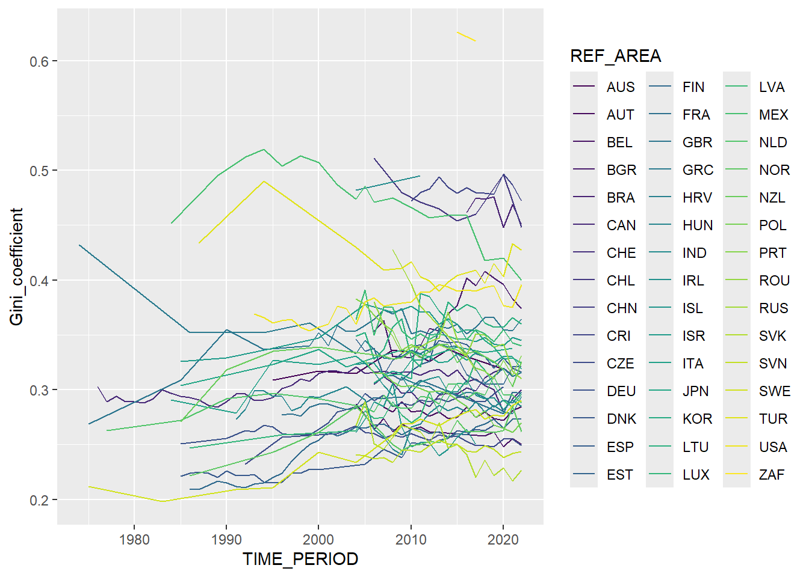
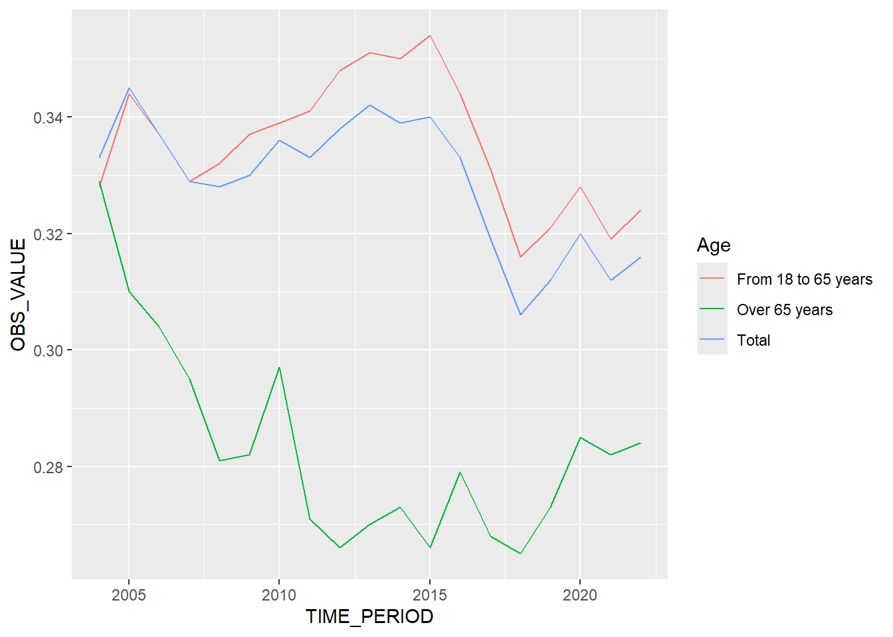
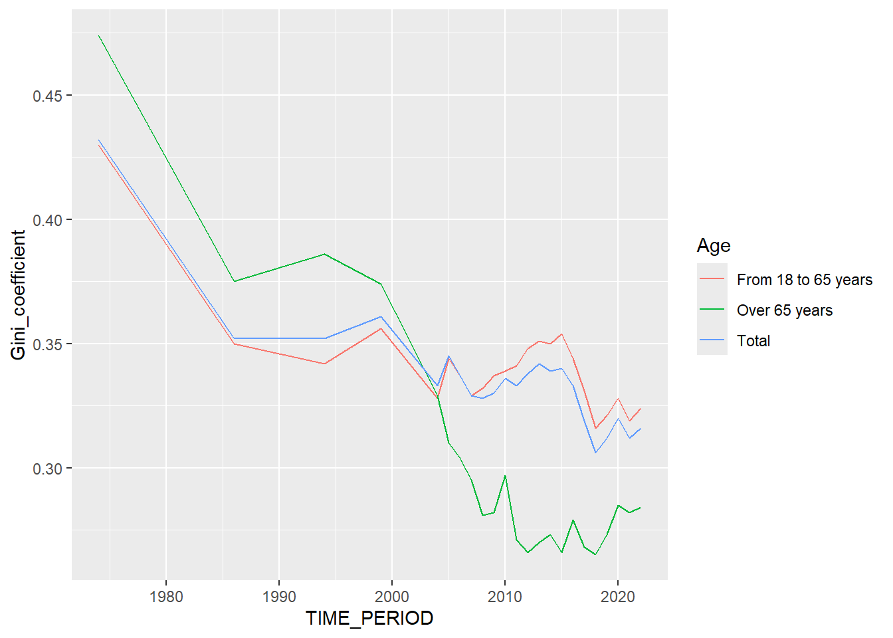

Μετρώντας την ανισότητα.
Κώστας Κούδας
2025-01-11
1 Παρουσίαση δεδομένων
Στην παρούσα ενότητα θα προσπαθήσουμε να αξιολογήσουμε το επίπεδο ανισότητας που υπάρχει σε διάφορες χώρες. Ένας τρόπος είναι να κάνουμε το ακόλουθο νοητικό πείραμα.
Το μέσο ετήσιο εισόδημα π.χ. στην Ελλάδα το 2022 ήταν 13973€. Αυτό στο περίπου σημαίνει ότι αν διαλέγαμε τότε έναν Έλληνα στην τύχη, αναμέναμε να τύχουμε κάποιον με εισόδημα \(13\ 973\)€.
Ας φανταστούμε τώρα ότι διαλέγαμε δύο Έλληνες. Τί διαφορά θα αναμέναμε να είχαν τα εισοδήματά τους;
- Αν όλοι οι Έλληνες είχαν ίδιο εισόδημα (\(13\ 973\)€ έκαστος), θα αναμέναμε μια διαφορά ίση με το \(0\).
- Αν από την άλλη είχαμε μια ακραία ανισότητα όπου όλος ο πλούτος ήταν στα χέρια ενός Έλληνα, τότε η διαφορά που θα συναντούσαμε θα ήταν είτε \(0\) (αν τυχαίναμε δύο φτωχούς) είτε \(10\ 413\ 982 \cdot 13\ 973=145\ 514\ 570\ 486\)€ (αν τυχαίναμε τον πλούσιο με έναν φτωχό). Κατά μέσο όρο, αυτό που περιμένουμε να συντήσουμε αποδεικνύεται ότι ισούται με το διπλάσιο του μέσου εισοδήματος (εν προκειμένω \(2 \cdot 13\ 973=27\ 946\)€). Σε αυτή την περίπτωση της ακραίας ανισότητας η αναμενόμενη διαφορά θα ήταν η μέγιστη δυνατή.
- Για τις ενδιάμεσες καταστάσεις ανισότητας θα αναμέναμε να τύχουμε και ενδιάμεσες διαφορές. Κάτι μεταξύ των \(0\)€ και των \(27\ 946\)€.
Τί όμως συνέβαινε πραγματικά; Ποια ήταν η αναμενόμενη διαφορά εισοδήματος που θα συναντούσαμε σε δύο τυχαίους Έλληνες; Ή καλύτερα, τι ποσοστό της μέγιστης διαφοράς (εν προκειμένω των \(27\ 946\)€) θα αναμέναμε να ήταν αυτή η διαφορά; Στην Ελλάδα του 2022 αυτό το ποσοστό ήταν \(0.316\), ήτοι \(31.6\%\). Με άλλα λόγια, πρόχειρα μιλώντας, στην Ελλάδα του 2022 η τρέχουσα κατάσταση ανισότητας ήταν το \(31.6\%\) της μέγιστης δυνατής. Σαν να λέμε, δηλαδή, ότι είχαμε \(31.6%\) επίπεδο ανισότητας.
Το ποσοστό αυτό είναι ο λεγόμενος συντελεστής Gini της Ελλάδας για το έτος 2022.
Εν γένει, λοιπόν, ο συντελεστής Gini μιας χώρας είναι το ποσοστό της αναμενόμενης διαφοράς εισοδήματος προς τη μέγιστη δυνατή. Και με πιο πρόχειρα λόγια, είναι το ποσοστό της τρέχουσας κατάστασης ανισότητας σε σχέση με τη μέγιστη δυνατή ανισότητα. Συνεπώς μετράει πόσο μεγάλη ανισότητα υπάρχει στον πληθυσμό.
Όταν ο συντελεστής Gini παίρνει τιμή 0 (0%), σημαίνει ότι έχουμε μια κατάσταση πλήρους ισότητας.
Αν παίρνει την τιμή 1 (100%), σημαίνει ότι έχουμε μια κατάσταση ακραίας ανισότητας.
Αν παίρνει τιμή μεταξύ 0 και 0.3 (0%-30%), τότε υποδεικνύει σχετική ισότητα, ήτοι ο πλούτος κατανέμεται αρκετά ισότιμα.
Αν είναι μεταξύ 0.3 και 0.4 (30%-40%) υποδηλώνει ότι υπάρχει επαρκής ισότητα. Αυτό σημαίνει ότι το εισόδημα κατανέμεται με ικανοποιητικό τρόπο, αλλά υπάρχει περιθώριο για μεγαλύτερη ισότητα.
Ένας συντελεστής μεγαλύτερος από 0.4 (40%-100%) δείχνει ότι υπάρχει μεγάλο χάσμα εισοδήματος. Ανισότητα πάνω από αυτό το επίπεδο συχνά συνδέεται με κοινωνική και πολιτική αστάθεια ή ένταση.
Ακόμα χειρότερα, ένας συντελεστής μεταξύ 0.5 και 1 (50%-100%) σημαίνει ότι υπάρχει σοβαρή ανισότητα μέσα σε μια οικονομία.
Αυτόν θα εξετάσουμε εδώ.
Από τη σελίδα του OECD
αντλήσαμε τους συντελεστές Gini για διάφορες χώρες και σε διάφορα έτη.
Αν προσέξει ο αναγνώστης, θα δει ότι υπάρχουν καταχωρίσεις
(Age) για την ανισότητα σε μεγάλες ηλικίες
(Over 65 years), για μικρότερες
(From 18 to 65 years), αλλά και για την ανισότητα στο
σύνολο του πληθυσμού (Total).
| REF_AREA | Age | AGE | TIME_PERIOD | Income definition since 2012 | Income definition until 2011 |
|---|---|---|---|---|---|
| AUS | From 18 to 65 years | Y18T65 | 1995 | NA | 0.301 |
| AUS | From 18 to 65 years | Y18T65 | 2000 | NA | 0.292 |
| AUS | From 18 to 65 years | Y18T65 | 2004 | NA | 0.305 |
| AUS | From 18 to 65 years | Y18T65 | 2008 | NA | 0.324 |
| AUS | From 18 to 65 years | Y18T65 | 2010 | NA | 0.318 |
| AUS | From 18 to 65 years | Y18T65 | 2012 | 0.315 | 0.313 |
Επειδή ο συντελεστής Gini υπολογίστηκε σε κάποιες περιόδους βάσει
παλαιότερων κριτηρίων και σε κάποιες άλλες βάσει των σύγχρονων κριτηρίων
(βλ. Income definition until 2011 και
Income definition since 2012), θα κρατήσουμε όπου είναι
δυνατό τα τρέχοντα κριτήρια υπολογισμού του
(Income definition since 2012) και, όπου αυτά δεν είναι
διαθέσιμα, θα αρκεστούμε στα παλιά
(Income definition until 2011).
| REF_AREA | Age | AGE | TIME_PERIOD | Income definition since 2012 | Income definition until 2011 | Gini_coefficient |
|---|---|---|---|---|---|---|
| AUS | From 18 to 65 years | Y18T65 | 1995 | NA | 0.301 | 0.301 |
| AUS | From 18 to 65 years | Y18T65 | 2000 | NA | 0.292 | 0.292 |
| AUS | From 18 to 65 years | Y18T65 | 2004 | NA | 0.305 | 0.305 |
| AUS | From 18 to 65 years | Y18T65 | 2008 | NA | 0.324 | 0.324 |
| AUS | From 18 to 65 years | Y18T65 | 2010 | NA | 0.318 | 0.318 |
| AUS | From 18 to 65 years | Y18T65 | 2012 | 0.315 | 0.313 | 0.315 |
2 Τρέχουσα κατάσταση
3 Πορεία στο χρόνο



4 Συσχέτιση ανισοτήτων σε μικρές και μεγάλες ηλικίες


## [1] 0.8717362##
## Call:
## lm(formula = giniWide$`From 18 to 65 years` ~ giniWide$`Over 65 years`)
##
## Coefficients:
## (Intercept) giniWide$`Over 65 years`
## 0.102 0.709